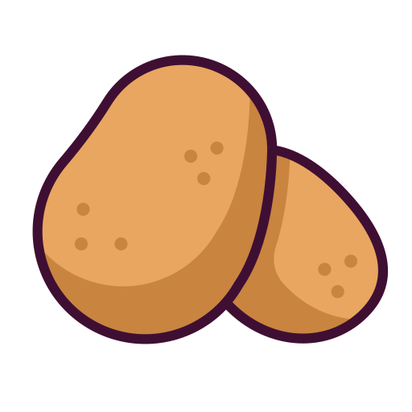
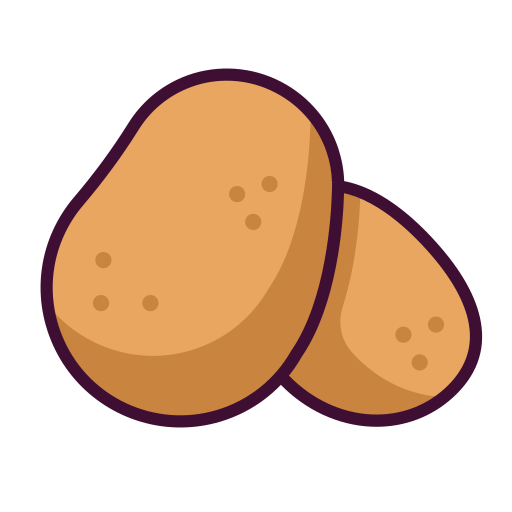

MOROCCO
- Morocco is located in North Africa, on the northwest corner of the African continent.Morocco is also separated from Europe by the Strait of Gibraltar, a narrow passage that connects the /Mediterranean Sea to the Atlantic Ocean.
- Morocco’s history is rich and layered, shaped by indigenous Berber communities, Arab influences, and European interactions. The region has been inhabited since prehistoric times, with the Berbers as its earliest inhabitants. In the 7th century, Arab armies brought Islam, which became deeply integrated into Moroccan culture and society. Morocco later became a powerful center of Islamic learning and trade, especially during the dynasties of the Almoravids and Almohads in the medieval period. By the 20th century, European powers had their eye on Morocco, leading to French and Spanish protectorates established in 1912. Morocco regained its independence in 1956, and since then, it has remained a significant cultural and economic bridge between Africa, the Arab world, and Europe.
- Morocco is renowned for its diverse and vibrant tourist attractions, offering a blend of natural beauty, historic sites, and cultural experiences. Marrakech: Known for its bustling souks, historic palaces, and the vibrant Jemaa el-Fnaa square, Marrakech is a lively city where visitors can experience Moroccan culture up close.
-
Fun Fact
Morocco is home to the world’s oldest continuously operating university! The University of Al-Qarawiyyin in Fez was founded in 859 AD by a woman named Fatima al-Fihri.
Location
History
Tourist Attraction


Moroccos Flavours
Morocco's cultural food history is a rich blend of Berber, Arab, Andalusian, and French influences, shaped by centuries of trade and migration. Traditional Moroccan cuisine is known for its bold use of spices like cumin, saffron, cinnamon, and ginger, along with preserved lemons and olives. Staple ingredients include couscous, dates, almonds, and a variety of meats such as lamb and chicken. Dishes like tagine, slow-cooked stews in clay pots, and pastilla, a sweet and savoury pastry, reflect Morocco's diverse cultural heritage and its long history as a crossroads of civilizations
The Must Try Dish I Discovered in Morocco
TAJINE
Tajine, also known as tagine, refers both to the rich Moroccan stews and the cooking vessel used to make them. When referring to the cooking vessel, it is a round and shallow, clay or ceramic casserole with a tall, pointy, conical lid. The same lid fits into the base, so the steam condenses on its interior and drops back into the stew without any waste of flavours and moisture. The pots are ideal for slow cooking over embers or on a stove, resulting in buttery, tender vegetables and meat that falls off the bone.


 
